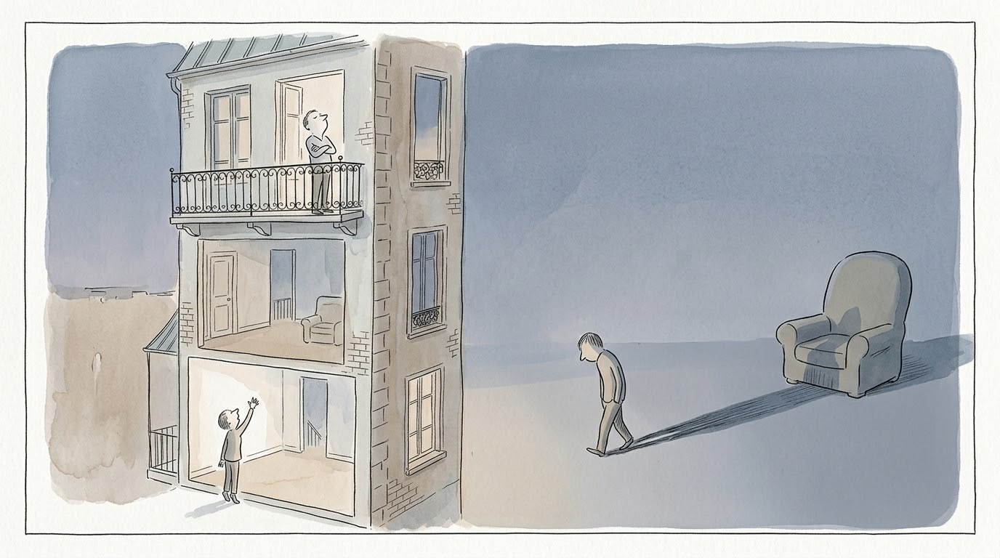

末日四騎士是什麼？伴侶吵架最傷的一種，是鄙視

末日四騎士，是四種最傷伴侶關係的吵法：批評、防衛、鄙視、抽離。其中最傷的，是鄙視。
這四種吵法來自婚姻專家高特曼（John Gottman）的研究，有大量研究支持。有些文章譯成批評、蔑視、防禦、築高牆，指的是同一組。
我在諮商工作裡，對末日四騎士有一些進一步的觀察：這四個其實是兩兩一組的。批評跟防衛是一組，鄙視跟抽離是一組。
末日四騎士裡，批評和防衛是一組：搶的是誰說了算
批評跟防衛，兩句話就講完了。
批評是：「你就是爛，你都沒有……」 防衛是：「我哪有，才不是這樣。」
有沒有很耳熟？
這很像小朋友吵架。「老師，他打我！」「我哪有！」然後老師說：「好，你們講清楚，一開始是誰先動手的？」「他啦！」「他啦！」這種事情是永永遠遠吵不完的。
伴侶吵起來更麻煩，因為旁邊已經沒有老師可以幫你們評理了。吵不完的東西，就慢慢變成一種傷害的累積。
那批評跟防衛到底在搶什麼？
一個說「你就是這樣」，一個說「我哪有」。最後，解釋這件事的權力在誰手上？沒有人手上，兩個人在互搶。
有時候吵著吵著，防衛的那個人累了，突然說：「你愛怎麼說就怎麼說，你說的都算。」防衛的人一讓步，就把解釋權交給了批評的人。下次再發生類似的事，批評的人就會說：「你看，我就知道你是這樣。」
末日四騎士裡，鄙視跟批評不一樣：它是全盤看不起
批評還是在說：你這個人怎麼樣、你做了什麼錯事、你個性哪裡不好。
鄙視，是對你這個人全盤的看不起。
就像網路上說的「鄙視鏈」：拿 iPhone 的瞧不起拿三星的，拿三星的瞧不起拿小米的。「你就是這樣，沒救了。」
我聽過最厲害的鄙視，甚至沒有一句話。對方在解釋家裡的一些事，講完之後，另一半只發出一聲：「哼。」
就一個聲音。聽的人當下會深深覺得，自己被踩到鄙視鏈的最底層。
為什麼鄙視最後會逼出抽離？
鄙視裡面，有一種高低之分。
鄙視的人站在三樓。你在一樓，再怎麼揮拳，都打不到他。你罵三字經，他就說：「你講啊，愛講就繼續講。」反正你就是那種粗人。
一直揮不到，你也就不想揮了。最好的方式是什麼？轉身離開。
「哦，你要這樣講，那你愛講什麼就講什麼吧。」然後開始不回家，開始不講話，開始變成家裡的大型傢俱。
這就是抽離。所以在末日四騎士裡，鄙視跟抽離是同一組。
為什麼說鄙視是末日四騎士裡的大魔王？
四種吵法都傷，但最傷的是鄙視。
高特曼的研究發現，長期被鄙視的伴侶，免疫系統比較弱，更容易染上感冒、流感這類傳染病。身心長期處在高度的壓力之下。
鄙視的背後，常常是無奈和無力
如果你發現，自己就是那個站在三樓的人呢？
我在《把天聊死，不如把愛聊活》裡寫過：鄙視在說的，常常是「我好無奈！又好無力……」
鄙視對方的你，其實有著日積月累的傷心。傷心久了卻看不見希望，最終轉變成無奈。無奈久了對方還是不改，就只剩下無力，或是冷眼旁觀的鄙視。
所以要留意的是：你從什麼時候開始，想要放棄這段關係？
常見問題
末日四騎士是什麼？
末日四騎士是婚姻專家高特曼研究發現的四種最傷伴侶關係的吵法：批評、防衛、鄙視、抽離（也譯作批評、蔑視、防禦、築高牆）。這四種吵法其實兩兩一組：批評配防衛，鄙視配抽離。
鄙視跟批評差在哪裡？
批評針對的是你做的事或你的個性；鄙視是對你這個人全盤的看不起，裡面有一種高低之分。
伴侶冷戰、不講話，就是抽離嗎？
常常是。被鄙視的人一直打不到站在三樓的對方，最後就轉身離開：不回家、不講話，變成家裡的大型傢俱。
除了末日四騎士，書裡也寫了另外三種更危險的黑魔法：情緒勒索、煤氣燈效應、有毒的 PUA。都在《把天聊死，不如把愛聊活》第五章。
延伸閱讀：
本文整理自：親子天下《關係相談所》EP.192〈遠離「哼」一聲氣死關係的「有毒對話」，用健康界限把愛聊活〉（2026），以及《把天聊死，不如把愛聊活》第五章。